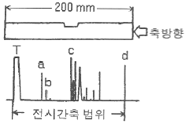
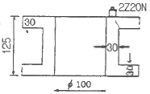
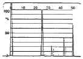
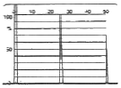
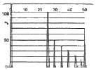
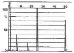

초음파비파괴검사기사 (2019-08-04 기출문제)
1과목: 비파괴검사 개론
1. 누설검사의 목적과 거리가 먼 것은?
- 환경오염의 방지
- 용접부 내부의 융합불량 검출
- 가압이나 진공하의 유체를 포함한 시스템관리
- 설비의 신뢰성 확보
(정답률: 53%)

2. 30mm 압연 강판에 존재하는 라미네이션을 검사할 때 가장 적절한 비파괴검사법은?
- 자동 방사선투과검사
- 자동 와전류탐상검사
- 자동 초음파탐상검사
- 질량분석 누설검사
(정답률: 77%)
3. 초음파가 A 매질에서 B매질로 입사각이 8°로 입사할 때의 굴절각은? (단, A 매질의 종파속도는 1500m/s이고, B매질에서 종파속도는 5000m/s이다.)
- 약 20°
- 약 28°
- 약 30°
- 약 38°
(정답률: 43%)
4. 레이저(laser)와 관계가 없는 비파괴검사법은?
- 광 홀로그램(Optical holography)
- 광탄성 피막 검사(Photoelastic coating test)
- 모아레 검사(Moire test)
- 보아스코프 검사(Borescope test)
(정답률: 81%)
5. 침투탐상제에 의한 누설검사에 대한 설명 중 틀린 것은?
- 누설 개소 확인이 용이하다.
- 가압장치 등 특수기구가 필요 없다.
- 시험체 두께에 구애받지 않는다.
- 누설검사 방법 중 가장 간단한 방법이다.
(정답률: 54%)
6. 컵 앤 콘(Cup and Cone) 형상과 가장 관계있는 파괴는?
- 압축파괴
- 피로파괴
- 연성파괴
- 취성파괴
(정답률: 62%)
7. 용융점이 높아 용해가 곤란하여 주로 분말 야금법으로 성형하는 금속으로 고속도강의 첨가 원소로도 사용되는 것은?
- W
- Ag
- Au
- Cu
(정답률: 74%)
8. Fe-Fe3C 상태도에서 공정 조직은?
- 페라이트
- 펄라이트
- 레데뷰라이트
- 오스테나이트
(정답률: 50%)
9. 니켈 합금이 아닌 것은?
- 인코넬
- 퍼멀로이
- 모넬 메탈
- 화이트 메탈
(정답률: 57%)
10. 6:4 황동에 주석을 첨가한 것으로 용접봉, 파이프 등으로 이용되는 것은?
- 네이벌 황동
- 하드 황동
- 알브랙 황동
- 에드미럴티 황동
(정답률: 56%)
11. 표점거리가 50mm, 직경이 5mm인 봉재 시편을 인장한 결과, 표점거리가 55mm가 되었고 인장강도는 1400MPa로 측정되었다. 이 때, 인장시험에서 최대 하중은 약 몇 kN인가?
- 25
- 27.5
- 30
- 32.5
(정답률: 70%)
12. 고속도 공구강의 기호로 옳은 것은?
- SM
- SPS
- STC
- SKH
(정답률: 68%)
13. SN-Sb-Cu계 합금(babbit metel)의 주용도는?
- 베어링용 합금
- 활자용 합금
- 땜납용 합금
- 저융점 합금
(정답률: 70%)
14. 열처리 후 최종 미세조직이 베이나이트인 열처리 방법은?
- Martrempering
- Austempering
- Ausforming
- Sperodizing
(정답률: 62%)
15. Ti 합금의 기본이 되는 합금형태가 아닌 것은?
- α형 합금
- β형 합금
- η형 합금
- (α+β)형 합금
(정답률: 67%)
16. 용접기의 아크 발생 시간이 7분, 아크 발생 정지 시간이 3분일 경우 용접기의 사용률은 몇 %인가?
- 30
- 50
- 70
- 100
(정답률: 73%)
17. 용접부 결함은 치수상의 결함, 구조상의 결함, 성질상의 결함으로 구분할 수 있다. 다음 중 구조상의 결함에 속하지 않는 것은?
- 기공
- 변형
- 오버 랩
- 언더컷
(정답률: 71%)
18. 전기가 필요 없고, 레일의 접합, 차축, 선박의 프레임(stern-frame) 등 비교적 큰 단면을 가진 주조나 단조품의 맞대기 용접과 보수용접에 사용되는 용접법은?
- 테르밋 용접
- 레이저 용접
- 전자 빔 용접
- 피복 아크 용접
(정답률: 71%)
19. 일반적인 용접의 특징으로 옳은 것은?
- 용접하려는 재료의 두께 제한이 있고, 보수와 수리가 곤란하다.
- 용접부에 변형 및 잔류 응력이 발생하고 저온취성이 생길 우려가 있다.
- 큰 소음이 발생하여 실내에서 작업이 곤란하고 복잡한 구조물 제작이 어렵다.
- 용접사의 기량에 관계없이 균일한 제품을 얻을 수 있고, 용접부의 품질 검사가 용이하다.
(정답률: 67%)
20. 모재의 재질결함으로써 강괴일 때 기포가 압연되어 생기는 설퍼 밴드(sulfur band)와 같이 층상으로 편재해 있어 강재의 내부에 노치를 형성한 균열은?
- 종 균열
- 크레이터 균열
- 마이크로 균열
- 라미네이션 균열
(정답률: 68%)
2과목: 초음파탐상검사 원리
21. 초음파의 종류에 해당하지 않는 것은?
- 종파
- 횡파
- 표면파
- 전자파
(정답률: 79%)
22. 5Z20N 탐촉자로 강재를 탐상할 때 근거리음장영역(Xo)의 값은? (단, 강재의 음속은 5900m/s이다.)
- 84.7mm
- 88.7mm
- 90.7mm
- 95.7mm
(정답률: 52%)
23. 음향임피던스가 다른 두 재질사이의 계면에 입사한 음파의 음향 진행각이 바뀌는 것을 무엇이라 하는가?
- 회절
- 간섭
- 굽힘
- 반사
(정답률: 32%)
24. 단조 가공 시 Ni, Cr, Mo 등을 포함한 특수강의 파단면에 미세균열이 발생되는데 이 파면은 은백색을 띤다. 이는 강중에 수소함량이 높을 때 잔류응력이나 열응력이 가해질 때 생긴다. 이 결함을 무엇이라 하는가?
- 백점
- 흑점
- 편석
- 터짐
(정답률: 80%)
25. 다음 초음파 설명 중 틀린 것은?
- 근거리음장 거리를 최소화하기 위해 직경이 큰 진동자를 사용한다.
- 근거리음장 거리를 최소화하기 위해 주파수가 낮은 진동자를 사용한다.
- 초음파 빔의 분산각을 작게하기 위해 직경이 큰 진동자를 사용한다.
- 초음파 빔의 분산각을 작게하기 위해 주파수가 높은 진동자를 사용한다.
(정답률: 36%)
26. 초음파탐상 시 서로 다른 두개의 원형결함의 진폭비를 구하였더니 12dB 차이가 있었다. 재질, 장비 등 다른 조건이 동일하다면 두 결함의 직경의 비는?
- 1:2
- 1:4
- 1:8
- 1:12
(정답률: 49%)
27. 2차 임계각으로 입사한 종파는 어떤 파를 발생시키는가? (단, 2파 매질은 고체이다.)
- 종파
- 횡파
- 종파 및 횡파
- 표면파
(정답률: 40%)
28. 분해능(Resolution)의 설명으로 가장 옳은 것은?
- 가까이 위치하고 있는 두 개의 불연속을 반사파형으로 분리할 수 있는 능력
- 미세한 불연속을 검출할 수 있는 능력
- 근거리음장과 원거리음장의 경계를 나타낼 수 있는 능력
- 선형결함과 원형결함을 구분해 낼 수 있는 능력
(정답률: 69%)
29. 음향방출시험(AE)에서 카이저효과란?
- 표면 및 내부의 탄성적인 정보를 알고자 할 때 사용되는 물성 값이다.
- 소성변형에서 동일 방향으로 변형을 계속하는 경우, 응력을 제거하면 본래 응력의 크기에 이를 때까지 AE가 관찰되지 않는 현상이다.
- FRP제 용기에서 주로 관찰되는 현상으로 이미 경험한 응력보다 낮은 응력이 작용한 경우에도 AE가 발생하는 현상이다.
- 시험체 표면에서 누설탄성표면파가 발생되는 현상이다.
(정답률: 58%)
30. 공진법으로 두께를 측정하는 기기에서 측정할 수 있는 두께 범위를 증가시키려면 어떻게 하여야 하는가?
- 큰 진동자를 사용한다.
- 기본 주파수로 작동한다.
- 조화 주파수로 작동한다.
- 교류전압을 증가시킨다.
(정답률: 40%)
31. 초음파탐상시험 시 높은 주파수를 사용하면 나타나는 장점은?
- 작은 결함의 검출에 유리하다.
- 감쇄가 적다.
- 매질내에서 넓게 퍼진다.
- 빨리 결함이 검출된다.
(정답률: 65%)
32. 다음 중 송신 효율이 가장 좋은 진동자의 재료는?
- 티탄산바륨
- 수정
- 황산리튬
- 지르콘산 납
(정답률: 63%)
33. 초음파탐상검사에서 검출해야 할 결함의 위치와 크기를 알고 있을 때, 탐상감도 검출레벨을 정하고 또 검출한 결함의 크기를 원형등가 크기로 추정하는 방법으로 옳은 것은?
- 데시벨 드롭법
- DGS 선도법
- 문턱값에 의한 방법
- APP선도법
(정답률: 53%)
34. 용접부에 대한 초음파탐상검사에서 탐촉자 선정과 관련하여 설명이 틀린 것은?
- 탐상표면의 거칠기가 클 때에는 낮은 주파수를 사용하여 표면의 산란을 방지하여야 한다.
- 피검체의 결정립이 큰 경우에는 저주파수를 사용하여 산란에 의한 감쇠를 보상해주어야 한다.
- 탐상속도를 높일 경우 저주파수의 큰 탐촉자를 사용하여 속도에 의한 감쇠를 보상해 주어야 한다.
- 두께가 비교적 얇은 판은 분해능을 높이기 위하여 저주파수를 이용한 광대역 탐촉자를 사용한다.
(정답률: 47%)
35. 수침법으로 구리를 초음파탐상할 때 종파를 경사지게 입사시켜 시험하고자 한다. 이 때 구리의 제 2임계각은 몇 도인가? (단, 물의 종파 속도 VL=1500m/s, 구리의 종파 속도 VL=4700m/s, 구리의 횡파속도 VS=2300m/s이다.)
- 40.7°
- 18.6°
- 20.3°
- 9.3°
(정답률: 34%)
36. 종파가 고체로 입사할 때 입사각이 첫 번째 임계각보다 작으면 고체 내에는 어떤파가 생기는가?
- 종파와 횡파
- 종파와 표면파
- 종파
- 횡파
(정답률: 46%)
37. 초음파탐상기에서 어느 일정 높이 이하의 에코 또는 노이즈를 억제하기 위한 것으로서 탐상기의 증폭 직선성 저하가 우려되는 기능은?
- 필터
- 리젝션
- DAC
- 게이트
(정답률: 63%)
38. 음향임피던스는 어느 경우에 사용되는가?
- 시험체 내의 빔의 확산을 결정할 때
- 시험체 내의 감쇠율을 결정할 때
- 시험체 내의 속도를 결정할 때
- 접촉면에서의 투과 및 반사하는 음파의 에너지 비를 결정할 때
(정답률: 50%)
39. 초음파탐상 시 CRT상에 나타나는 임상에코 및 불규칙한 지시들의 원인으로 가장 타당한 것은?
- 표면이 곡면이기 때문에
- 결정구조가 조대하기 때문에
- 결정구조가 미세하기 때문에
- 접촉매질이 부적합하기 때문에
(정답률: 56%)
40. 주강품 및 단강품의 초음파 감쇠에 관한 설명으로 옳은 것은?
- 일반적으로 단강품이 크다.
- 일반적으로 주강품과 단강품이 모두 크다.
- 일반적으로 주강품이 크다.
- 일반적으로 주강품과 단강품이 모두 작다.
(정답률: 46%)
3과목: 초음파탐상검사 시험
41. 그림과 같이 길이 200mm, 직경 15mm인 봉재를 축방향으로 수직탐상 하였다. 봉재에 대한 아래 CRT상에서 지연(delayed) 에코는 어느 부분인가? (단, 탐촉자 직경 10mm, 주파수 2MHz, 시간축범위 400mm이다.)

- a
- b
- c
- T
(정답률: 46%)
42. T형 용접부에서 개선 가공이 되어 있지 않은 쪽의 라멜라 테어링(Lamellar tearing)은 어떻게 검출하면 좋은가?
- 반대면에서 45° 경사각탐촉자로 검사한다.
- 반대면에서 60° 경사각탐촉자로 검사한다.
- 반대면에서 수직탐촉자로 검사한다.
- 개선면에서 45° 경사각탐촉자로 검사한다.
(정답률: 46%)
43. 압력용기의 내식성을 증가시키는 클래드(Clad)부 바로 밑의 균열검사는 어떻게 하는 것이 효과적인가?
- 클래드(Clad) 부에서 경사각 탐상
- 모재부에서 경사각 탐상
- 클래드(Clad) 부에서 수직 탐상
- 모재부에서 수직 탐상
(정답률: 42%)
44. 다음 결함들 중 주조품에서 볼 수 없는 결함은?
- 기공
- 라이네이션
- 수축공동
- 불순물 혼입
(정답률: 72%)
45. 같은 크기의 결함 중 초음파탐상검사로 가장 발견하기 쉬운 결함은?
- 구형의 공동
- 이물질의 개재
- 초음파 진행방향과 나란한 균열
- 초음파 진행방향과 수직인 균열
(정답률: 62%)
46. 초음파탐상검사에서 다른 조건은 고려하지 않은 탐상면에 바르는 접촉매질 만의 일반적인 설명이다. 옳은 것은?
- 물과 글리세린 혼합제는 거친 표면에 효과적이다.
- 물은 접촉매질로 사용하지 않는다.
- 접촉매질의 종류에 따라 초음파의 절단효율이 달라질 수 있다.
- 탐상면이 매우 거칠 때는 기계유가 가장 좋다.
(정답률: 45%)
47. 초음파탐상기의 탐상도형의 표시방법에 해당되지 않는 것은?
- A-scope
- B-scope
- C-scope
- E-scope
(정답률: 63%)
48. 두께가 15mm인 강용접부를 굴적각 70°인 탐촉자로 탐상하여 80mm에서 결함지시가 나타났다. 탐촉자와 용접부 사이의 거리가 75mm라면 탐촉자와 이 결함간 거리는 약 얼마인가?
- 14.2mm
- 26.2mm
- 75.2mm
- 84.2mm
(정답률: 49%)
49. 탐촉자의 분해능과 감도에 영향을 주는 충진재에 대한 설명으로 옳은 것은?
- 탐촉자의 감도를 높이기 위해서는 탐촉자의 진동이 기능한한 빨리 흡음(Damping)되어야 한다.
- 탐촉자의 분해능을 높이기 위해서는 가능한한 흡음이 낮아야 한다.
- 흡음재의 음향임피던스가 탐촉자의 재질과 거의 동일할 때 진동자의 흡음이 가장 이상적이 된다.
- 흡음재의 음향임피던스가 탐촉자의 재질과 차이가 많을수록 이상적이다.
(정답률: 44%)
50. 경사각 탐촉자에는 각도가 표시되어 있는데 이에 대한 설명이 맞는 것은?
- 입사각을 기입한 것이다.
- 저탄소강에 대한 굴절각을 기입한 것이다.
- 알루미늄, 동, 강에 대한 굴절각을 기입한 것이다.
- 스테인리스 합금제에 대한 굴절각을 기입한 것이다.
(정답률: 40%)
51. 초음파탐상시험에 있어서 수직탐상의 감도조정 방법에 대한 설명 중 올바른 것은?
- 탐상감도의 설정방법으로 감도조정용 표준시험편의 표준 구멍으로부터의 에코가 정해진 높이가 되도록 탐상기의 감도를 조정하는 방법은 시험편방식이라 한다.
- 표준시험편을 사용하여 탐상감도를 조정하면 전달손실이나 산란감쇠의 보정은 필요 없다.
- 시험체는 대비시험편에 비해 통상 표면이 거칠기 때문에 산란에 의한 감쇠도 크다.
- 시험체의 결함에코가 어느 높이가 되도록 탐상감도를 조정하는 방법은 결함에코방식이라 하고 표면거칠기나 감쇠, 곡률의 영향을 받지 않는 장점이 있다.
(정답률: 45%)
52. 초음파탐상기에서 이득형(gain) 조정장치를 사용하여 어떤 에코의 높이는 10dB 내렸을 때 에코높이 변화는?
- 처음 에코의 3.1배 높이가 된다.
- 처음 에코의 0.3배 높이가 된다.
- 처음 에코의 1.4배 높이가 된다.
- 처음 에코의 0.9배 높이가 된다.
(정답률: 56%)
53. 단조품의 수직탐상에서 탐상감도 설정 시 대비시험편의 인공결함을 이용할 경우의 장점으로 틀린 것은?
- 검사결과의 상호 비교가 용이하다.
- 검출 목적에 부합되는 깊이 및 크기의 인공 불연속을 임의로 만들 수 있다.
- 탐상감도를 나타내기가 용이하다.
- 표면거칠기 및 시험체 곡률 등의 영향이 자동적으로 보정된다.
(정답률: 60%)
54. 강재 시험체를 그림의 위치에서 2Z20N을 이용하여 수직탐상 하였을 때 나타나는 탐상도형은? (단, 측정 범위는 강중 종파 250mm이고, 탐상부분에는 결함은 없다.)





(정답률: 40%)
55. 펄스반사법 초음파탐상장치에서 리젝션(Rejection) 조절기를 사용할 때 나타나는 영향이 아닌 것은?
- 전기적 잡음 에코가 작아진다.
- 저면 반사 에코가 작아진다.
- 증폭직선성이 좋아 진다.
- 수직직선성이 나빠진다.
(정답률: 39%)
56. PB-4형 시험편 시리즈(No.1~No.7)에서 표준구멍의 위치가 두께의 1/2 지점에 위치하는 시험편은?
- RB-4형 No.1
- RB-4형 No.3
- RB-4형 No.5
- RB-4형 No.7
(정답률: 35%)
57. 펄스 에코방식 초음파탐상기의 펄서(pulser)에서 나오는 출력전압의 범위를 나타낸 것으로 가장 알맞은 것은?
- 1~10V
- 10~100V
- 100~1000V
- 1000~10000V
(정답률: 44%)
58. 초음파탐상에서 일반적으로 많이 사용되고 있는 표시기는?
- 펜레코더
- 브라운관
- 전압계
- 가이거카운터
(정답률: 70%)
59. 표준시험편인 STB-C에 대한 설명 중 틀린 것은?
- V15 시리즈는 증폭직선성 점검용이다.
- 단면이 60×60mm인 것과 50×50mm 두 종류가 있다.
- V2에서 V8까지의 시험편은 거리진폭특성곡선용이다.
- V15-1.4는 표준구멍(ø)의 직경이 1.4mm 이다.
(정답률: 36%)
60. 펄스반사식 초음파탐상법에서 주파수를 선정할 때 고려 사항이 아닌 것은?
- 탐상하고자 하는 최소 결함의 크기
- 시험체의 형상
- 시험체의 입자구조 및 크기
- 시험체의 초음파 흡수
(정답률: 42%)
4과목: 초음파탐상검사 규격
61. 강 용접부의 초음파탐상 시험방법(KS B 0896)에서 영역 구분으로 H선과 L선의 dB 차이는?
- 3dB
- 6dB
- 12dB
- 20dB
(정답률: 52%)
62. 보일러 및 압력용기에 대한 초음파탐상검사(ASME Sec.V Art.4)에서 용접부 두께가 100mm 초과 시 적용되는 배관 교정 시험편의 구멍 지름의 설명으로 옳은 것은?
- 용접부 두께가 25mm 증가할 때마다 또는 75mm를 초과하는 그 증가량마다 구멍지름은 1.0mm씩 증가시켜야 한다.
- 용접부 두께가 50mm 증가할 때마다 또는 100mm를 초과하는 그 증가량마다 구멍지름은 1.5mm씩 증가시켜야 한다.
- 용접부 두께가 25mm 증가할 때마다 또는 75mm를 초과하는 그 증가량마다 구멍지름은 2.0mm씩 증가시켜야 한다.
- 용접부 두께가 50mm 증가할 때마다 또는 100mm를 초과하는 그 증가량마다 구멍지름은 3.0mm씩 증가시켜야 한다.
(정답률: 34%)
63. 보일러 및 압력용기에 대한 초음파탐상검사(ASME Sec.V Art.4)에서 규정하고 있는 초음파탐상 장치의 직선성 점검 주기로 옳은 것은? (단, 아날로그 장치, 디지털 장치의 순임)
- 3개월, 6개월을 초과하지 않아야 한다.
- 3개월, 1년을 초과하지 않아야 한다.
- 6개월, 1년을 초과하지 않아야 한다.
- 6개월, 2년을 초과하지 않아야 한다.
(정답률: 26%)
64. 강 용접부의 초음파탐상 시험방법(KS B 0896)에서 경사각 탐상 시 영역부분에 대한 H선, M선 및 L선의 결정 설명 중 옳지 않은 것은?
- 작성된 에코높이 구분선 중, 적어도 하위에서 3번째 이상의 선을 선택하여 H선으로 한다.
- H선은 원칙적으로 탐상감도를 조정하기 위한 기준선으로 한다.
- H선은 원칙적으로 홈 에코의 평가에 사용되는 빔 노정의 범위에서 그 높이가 40% 이하가 되지 않는 선으로 한다.
- H선보다 3dB 낮은 에코 높이 구분선을 M선으로 하고, 6dB 낮은 에코높이 구분선을 L선으로 한다.
(정답률: 65%)
65. 강 용접부의 초음파탐상 시험방법(KS B 0896)에 따라 10시간 연속 검사할 때, 입사점, STB 굴절각, 탐상굴절각 등은 최소한 몇 번 이상 조정 및 점검하여야 하는가? (단, 검사 개시 시를 포함한다.)
- 1번
- 2번
- 3번
- 10번
(정답률: 43%)
66. 보일러 및 압력용기에 대한 초음파탐상검사(ASME Sec.V, Art.23 SA-388)에서 수동 초음파탐상 시, 탐촉자 주사속도로 가장 적합한 것은?
- 150mm/s를 초과하지 않아야 한다.
- 300mm/s를 초과하지 않아야 한다.
- 450mm/s를 초과하지 않아야 한다.
- 600mm/s를 초과하지 않아야 한다.
(정답률: 52%)
67. 보일러 및 압력용기에 대한 초음파탐상검사(ASME Sec.V Art.4)에서 클래딩이 존재하는 비 배관 교정시험편의 클래딩 쪽 노치 깊이로 옳은 것은?
- 노치 깊이는 2%T
- 노치 깊이는 최소 1.6%T에서 최대 2.2%T
- 노치 깊이는 최소 1.6%T+클래딩 두께(CT)에서 최대 2.2T+클래딩 두께(CT)
- 노치 깊이는 최소 2.5%T+클래딩 두께(CT)에서 최대 3.5T+클래딩 두께(CT)
(정답률: 55%)
68. 압력용기용 강판의 초음파탐상 검사방법(SK D 0233)에서 용접보수가 필요할 때, 단면결함(단면 또는 그 부근에서 판의 내부를 향하여 전이를 가진 결함)의 보수 한도로 옳은 것은?
- 판의 단면으로부터의 거리가 20mm 이내로 한다.
- 판의 단면으로부터의 거리가 30mm 이내로 한다.
- 판의 단면으로부터의 거리가 40mm 이내로 한다.
- 판의 단면으로부터의 거리가 50mm 이내로 한다.
(정답률: 24%)
69. 보일러 및 압력용기에 대한 초음파탐상검사(ASME Sec.V, Art.23 SA-388)에서 초음파장치는 8시간마다 최소한 1번의 교정점검을 수행한다. 게인 레벨 손실 또는 증가가 몇 % 이상 나타나면 재교정전 검사된 모든 재료를 재검사해야 하는가?
- 5%
- 10%
- 15%
- 30%
(정답률: 37%)
70. 압력용기 제작기준 규격 강제 부록(ASME Code Sev.Ⅷ Dive.1 App.12)에 따라 50mm의 두께를 갖는 맞대기 용접부를 검사한 결과 다음과 같은 결함이 검출되었다. 다음 중 불합격인 지시는?
- 참조기준(reference level)의 25%에 해당하는 14mm 기공
- 참조기준(reference level)의 100%에 해당하는 8mm 슬래그
- 참조기준(reference level)의 25%에 해당하는 6mm 용입부족
- 참조기준(reference level)의 110%에 해당하는 10mm 이공
(정답률: 37%)
71. 보일러 및 압력용기에 대한 초음파탐상검사(ASME Sec.V Art.4)에서 지름이 500mm 이하인 재료에서 별도로 규정하지 않는 한 하나의 곡면 기본 교정시험편은 기본 교정시험편의 몇 배 범위까지 검사 표면을 교정하는데 사용할 수 있는가?
- 기본 교정시험편의 지름보다 곡률이 0.5에서 1.0배인 검사 표면까지
- 기본 교정시험편의 지름보다 곡률이 0.7에서 1.0배인 검사 표면까지
- 기본 교정시험편의 지름보다 곡률이 0.9에서 1.5배인 검사 표면까지
- 기본 교정시험편의 지름보다 곡률이 0.9에서 2.0배인 검사 표면까지
(정답률: 58%)
72. 초음파탐상 시험용 표준시험편(KS B 0831)에 따른 G형 표준시험편의 사용 목적이 아닌 것은?
- 탐상감도 조정
- 탐상기 종합 성능 측정
- 수직 탐촉자 특성 측정
- 경사각 탐촉자 특성 측정
(정답률: 45%)
73. 보일러 및 압력용기에 대한 초음파탐상검사(ASME Sec.V, Art.23 SA-435)따라 강판을 수직빔 검사를 실시할 때, 추가적인 모서리 주사선의 설정으로 옳은 것은?
- 주사표면상에서 모든 강판 모서리의 25mm 이내로 주사해야 한다.
- 주사표면상에서 모든 강판 모서리의 50mm 이내로 주사해야 한다.
- 주사표면상에서 모든 강판 모서리의 75mm 이내로 주사해야 한다.
- 주사표면상에서 모든 강판 모서리의 100mm 이내로 주사해야 한다.
(정답률: 30%)
74. 강 용접부의 초음파탐상 시험방법(KS B 0896)에서 공칭주파수가 2MHz인 경사각 탐촉자의 불감대 허용 한계로 옳은 것은?
- 10mm 이하
- 45mm 이하
- 25mm 이하
- 35mm 이하
(정답률: 34%)
75. 보일러 및 압력용기에 대한 초음파탐상검사(ASME Sec.V, Art.23 AS-609)에 따라 주강품을 경사각 탐촉자로 시험할 때 최소 몇 %정도 겹치기 주사를 해야 하는가?
- 탐촉자 폭의 5%
- 탐촉자 폭의 10%
- 음속 폭의 5%
- 음속 폭의 10%
(정답률: 63%)
76. 보일러 및 압력용기에 대한 초음파탐상검사(ASME Sec.V, Art.23 SA-388)에서 수직빔 검사로 탐상할 때 단독지시에 대한 보고서에 기록 내용으로 옳은 것은?
- 저면 반사법에서 지시가 없는 인접한 영역에서 공칭 저면 반사의 10% 이상인 단독지시
- 대비시험편법에서 대비 증폭의 100%를 초과하는 단독지시
- DGS 기법에서 대비 증폭의 50%를 초과하는 단독지시
- 진폭기준선으로부터 지시가 50% 이상인 불연속지시
(정답률: 27%)
77. 압력용기용 강판의 초음파탐상 검사방법(KS D 0233)에서 요구하는 탐상기의 성능 중 틀린 것은? (단, A스코프 탐상기이다.)
- 펄스 반사법이어야 한다.
- 증폭 직선성은 양의 최대편차와 음의 최대편차의 절대값의 합이 6% 이하여야 한다.
- 원거리 분해능은 2MHz에서 9mm 이하, 5MHz에서 7mm 이하여야 한다.
- 불감대는 5MHz일 때는 15mm이하, 2MHz일 때는 20mm 이하여야 한다.
(정답률: 35%)
78. 강 용접부의 초음파탐상 시험방법(KS B 0896)에서 에코 높이 구분선 작성에서 1회 반사법의 경우 탐촉자와 결함까지의 주사거리로 옳은 것은?
- 0~0.5S
- 0.5~1.0S
- 1.0~1.5S
- 1.5~3.0S
(정답률: 60%)
79. 보일러 및 압력용기에 대한 초음파탐상검사(ASME Sec.V Art.5) 중 접촉매질의 오염 관리에서 250ppm 이상의 황을 포함해서는 안 되는 시험 대상물로 옳은 것은?
- 니켈합금
- 티타늄합금
- 알루미늄합금
- 저합금
(정답률: 55%)
80. 보일러 및 압력용기에 대한 초음파탐상검사(ASME Sec.V Art.4)에 따른 수동탐상시험 주사 속도는 특별한 규정이 없는 경우 최고 약 몇 mm/s로 제한하고 있는가?
- 150
- 300
- 475
- 600
(정답률: 49%)